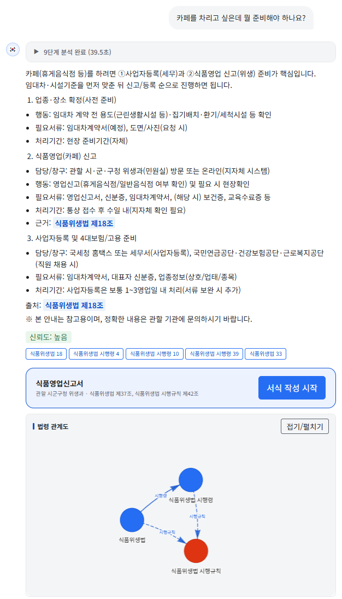
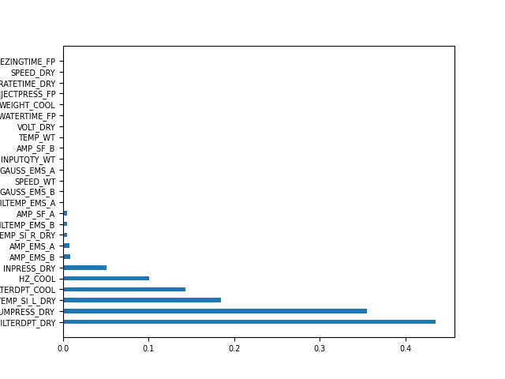
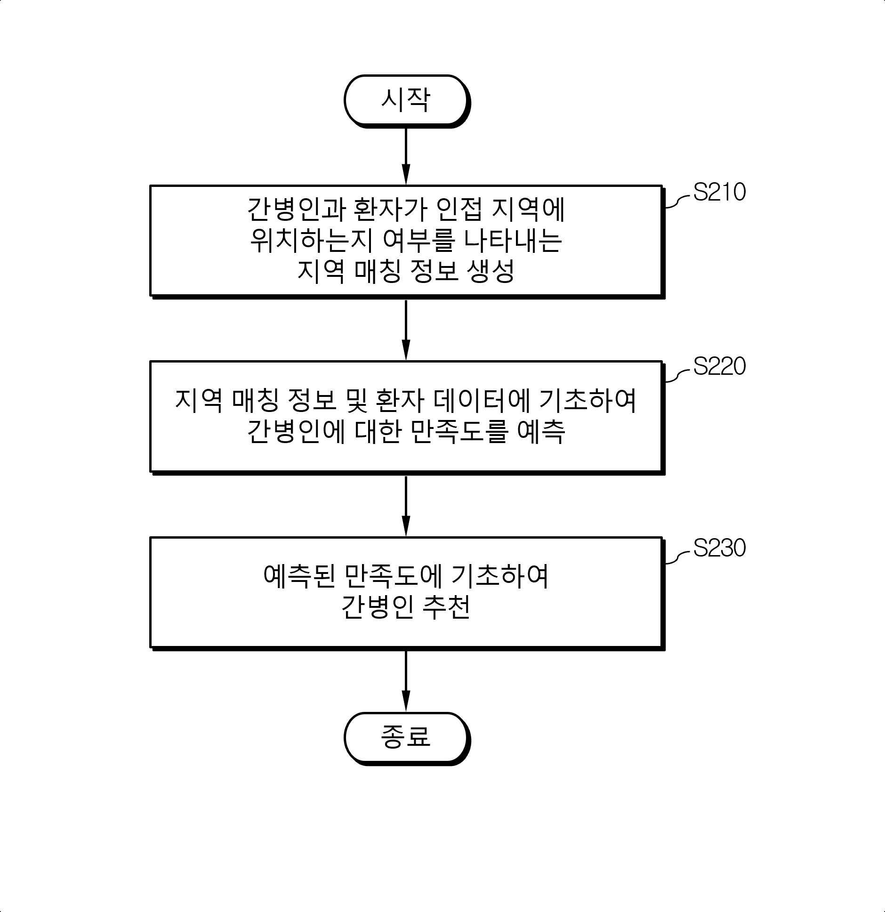

Projects
-
AI assistance for local government administration
Mar 2026–present
I managed the AI assistant prototype. I worked on the conversation flow so it could ask for missing details, retrieve the relevant public-service guidance, and use those sources to draft an answer.

View full sizeOriginal demo capture from the Solideo project submission. -
Metal contamination detection in battery cathode materials
Jan–May 2025
I examined production sensor readings and lab assays for metal contamination. I mapped how the two sources could be matched by production lot to prepare labeled examples for a detection model.

View full sizeFeature importance chart from the original virtual metrology analysis. -
Predicting steel plate curvature after rolling
Dec 2024–Nov 2025
I worked on selecting usable frames from rolling-line images, segmenting the plate, and extracting its lower edge. We used the outline to measure curvature and predict whether the plate tip would bend up or down in a later pass.
 View full size
View full size
Original pipeline figure from the POSCO project presentation in my portfolio. -
Care product recommendation system
Jul–Dec 2023
As a research assistant, I contributed to a recommender that uses patient needs, the care setting, and product information to suggest suitable supplies. I am a co-inventor on the associated published patent application.
 View full size
View full size
Original system drawing from Korean patent application 10-2023-0185772. -
Personalized information for patients and caregivers
Sep 2022–Jan 2023
I contributed to the caregiver–patient matching project as a research assistant. Our team designed a model that uses patient and caregiver profiles, location, and past satisfaction to suggest matches. I am a co-inventor on the resulting patent.

View full sizeOriginal recommendation flowchart from Korean patent 10-2635315.


Research
-
An Adaptive Contrastive Learning-Based Robust Surface Defect Detection Model for Noisy Datasets
2026
I studied how to detect surface defects when the training images include defective samples.
-
Adaptive Model Selection for Time-Series Classification with Language Model
2026
We used a language model to choose which classifier to apply to each time series.
Patents
-
Data analysis assistance for marketers
2026
-
Caregiver–patient matching
2024
-
Care product recommendations
Filed 2023
Teaching
-
Machine Learning 1 (DSS6003)
Fall 2025
-
ML & Industrial Applications (IIE3104-01)
Fall 2025
-
Machine Learning 2 (DSS6017)
Spring 2025
Education
-
Yonsei University
2024–present
-
The Catholic University of Korea
2018–2024
Research experience
-
System Intelligence Lab, Yonsei University
2024–present
-
Applied AI Lab, The Catholic University of Korea
2022–2024